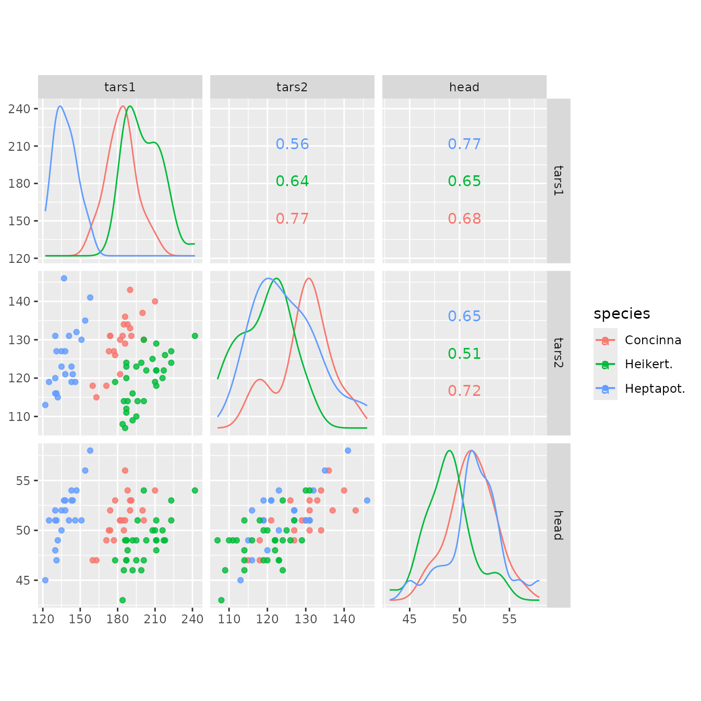

ggscatmat(): Numeric pairwise plot matrix
Di Cook, Mengjia Ni
Nov 6, 2015
Source:vignettes/ggscatmat.Rmd
ggscatmat.Rmd
GGally::ggscatmat()
The primary function is ggscatmat(). It is similar to
ggpairs() but only works for purely numeric multivariate
data. It is faster than ggpairs(), because less choices
need to be made. It creates a matrix with scatterplots in the lower
diagonal, densities on the diagonal and correlations written in the
upper diagonal. Syntax is to enter the dataset, the columns that you
want to plot, a color column, and an alpha level.

In this plot, you can see that the three different species vary a
little from each other in these three variables. Heptapot (blue) has
smaller values on the variable tars1 than the other two.
The correlation between the three variables is similar for all
species.
References
John W Emerson, Walton A Green, Barret Schloerke, Jason Crowley, Dianne Cook, Heike Hofmann, Hadley Wickham. The Generalized Pairs Plot. Journal of Computational and Graphical Statistics, vol. 22, no. 1, pp. 79-91, 2012.